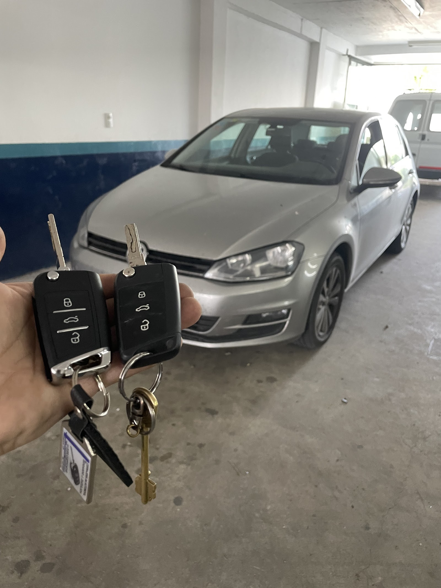
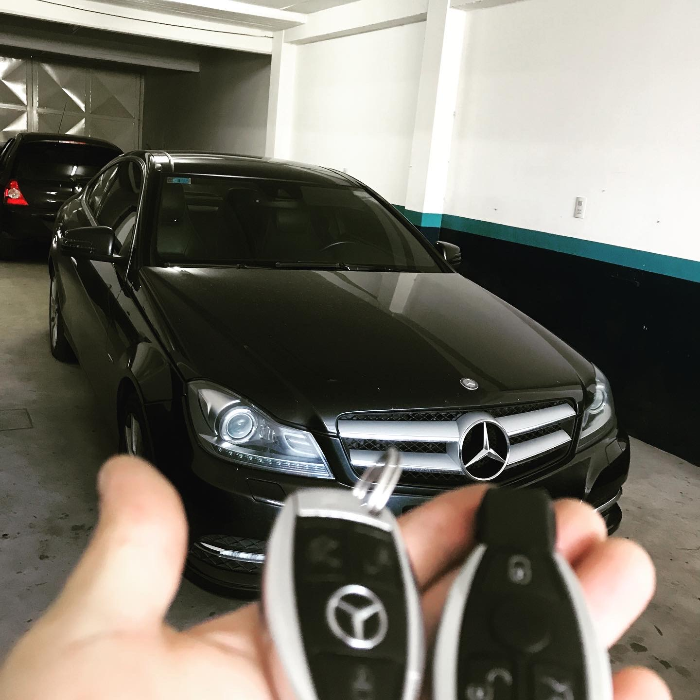
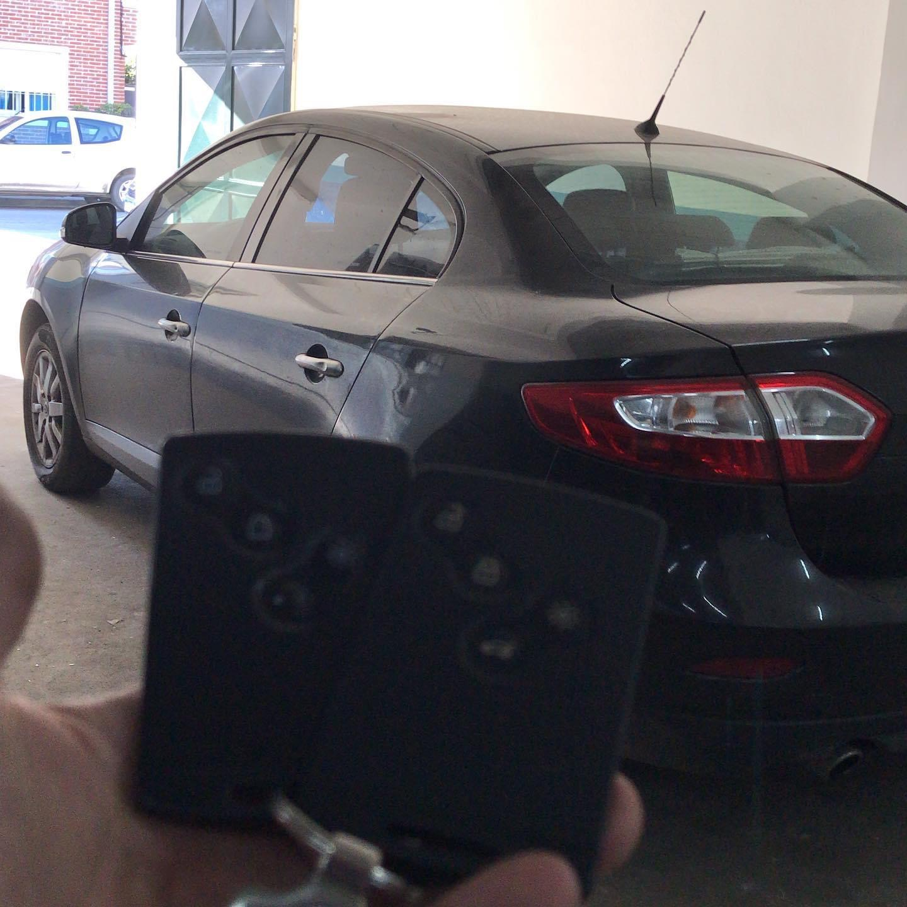

Copiado de llaves
Traé la llave original para hacer una copia común o de seguridad y resolver la consulta en el mostrador.
Mostrador de cerrajería en el centro
Cerrajero de mostrador en Belgrano 129: copiado de llaves, cerraduras y candados con 4.8 sobre 5 en 117 reseñas.

En el mostrador
Copiado de llaves, llaves de auto codificadas y cambio de cerraduras, con atención directa de local.
El servicio se concentra en el mostrador de Belgrano 129: copias para llaves comunes y de seguridad, consultas por llaves de auto codificadas, cambio y reparación de cerraduras y elección de candados. La prueba social acompaña esa promesa simple: 4.8 sobre 5 en 117 reseñas, con vecinos que destacan la atención y que los problemas se resuelven en el momento.
Traé la llave original para hacer una copia común o de seguridad y resolver la consulta en el mostrador.
Para llaves de auto codificadas, acercate con el original o el documento del auto y consultá en el local.
Cambio y reparación se conversan en el mostrador, con el problema concreto y la cerradura como referencia.
Venta y asesoramiento para elegir candados según el uso que necesitás resolver ese día.
Antes de venir
La ubicación en Belgrano 129 queda a metros del centro de Tandil, pero el horario es partido: lunes a jueves atiende de 8 a 12 y de 15 a 18, y el viernes de 8 a 12. Si venís con una llave de auto, el dato importante es traer el original o la documentación indicada para que la consulta sea clara desde el primer minuto.


Lo que dicen en el mostrador
Reseñas literales de Google, con autor exacto.
Excelente atención , super profesional . Muy buen servicio , totalmente recomendable !!!! Regresaría sin dudarlo !
JORGE ALBERTO SALINAS
Excelente atención como siempre. Solucionan los problemas en el momento. Muy recomendable!
Paula Charlone
Excelente atención y servicio.
Roxana Martinez
Contacto directo
Teléfono y dirección exacta, con el horario partido bien claro para no venir en vano.
0249 449-8213